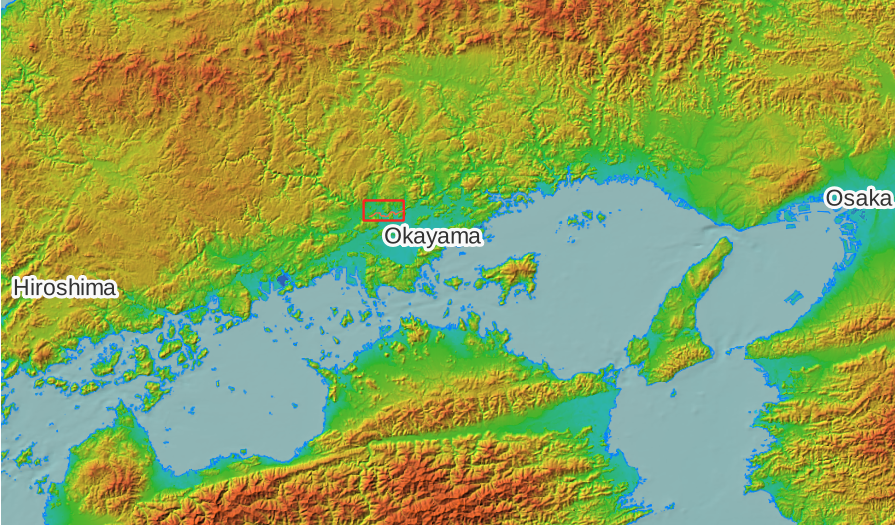
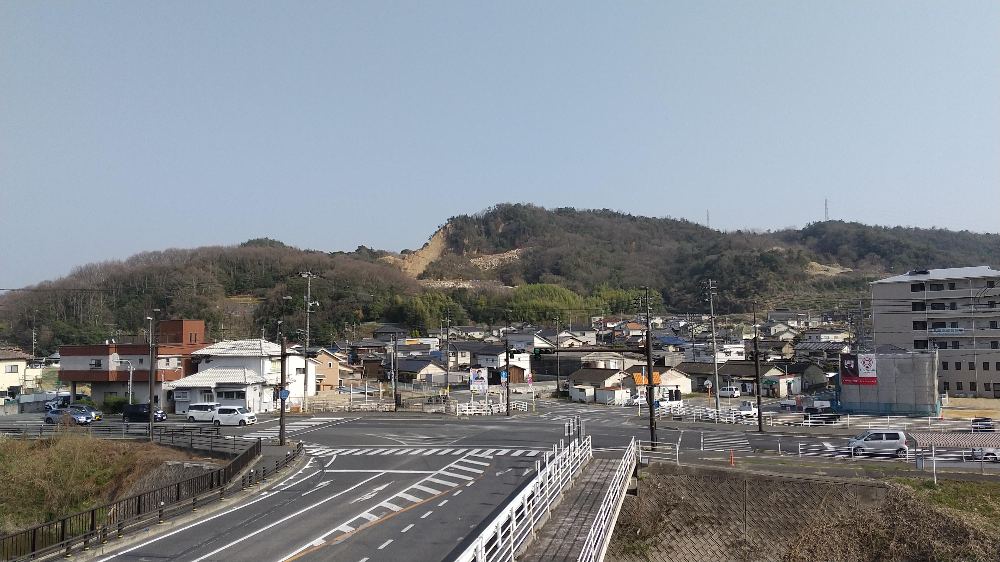
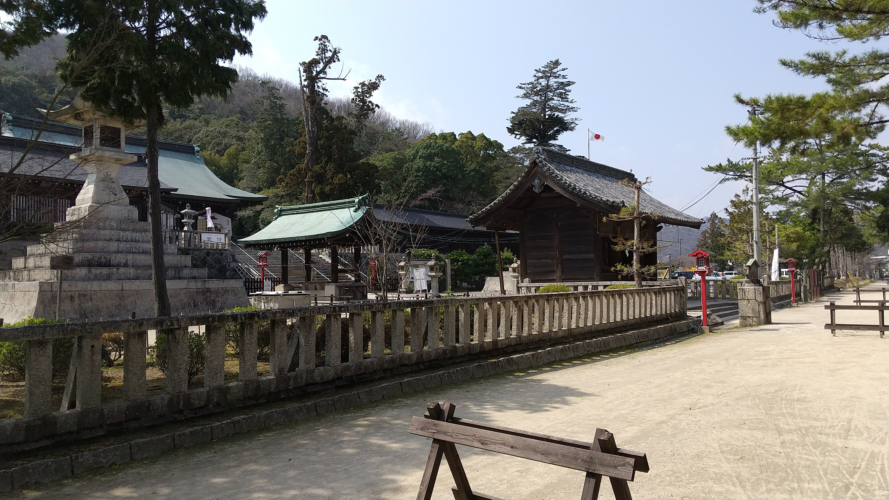
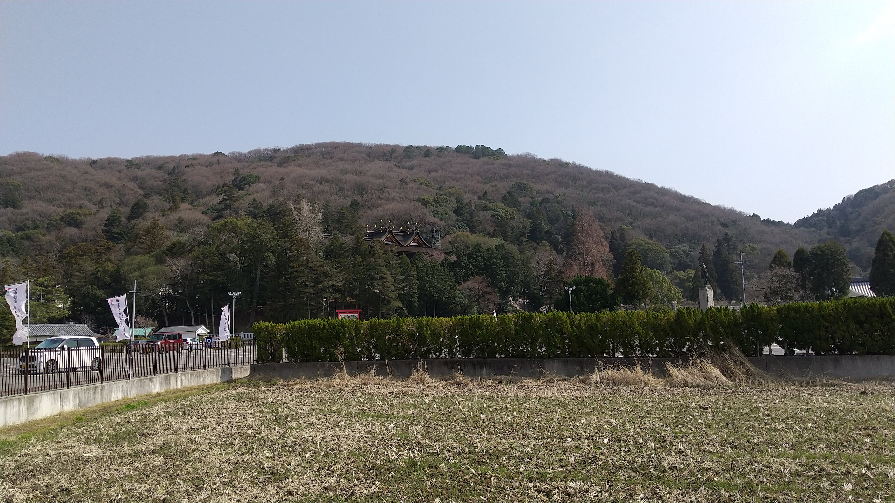
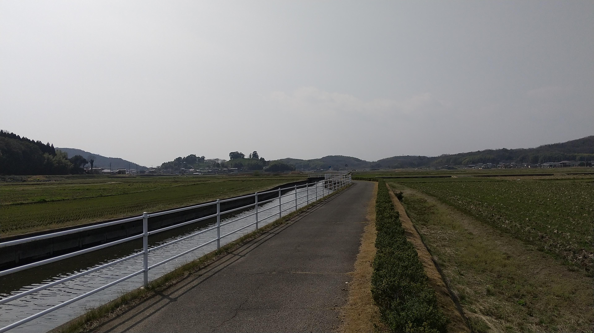
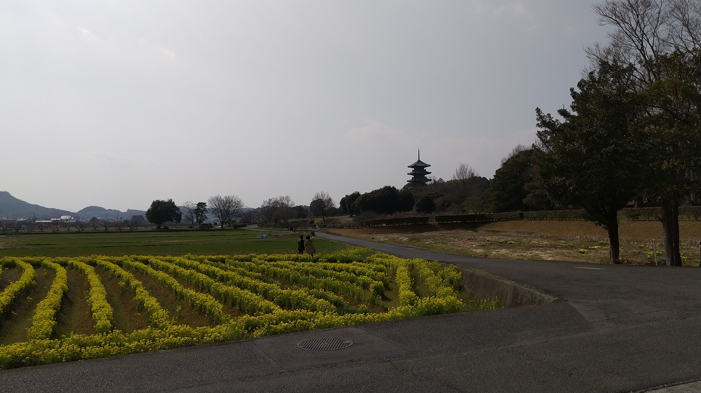

Kibi-ji Cycling
Kibi is an old region name in Japan. I went biking on the Kibi-ji cycling route alone on a day in the spring.

Biking on this day started in the middle part of the Sasagase River basin.
Mannari granite quarry
We can see a granite quarry of Mannari Ishi on the left side. My grandfather was a stone mason.

Kibitsuhiko Shrine
I passed by the Kibitsuhiko Shrine. I sometimes buy an amulet for road safety there.
[Wikipedia]

Kibitsu Shrine
I passed by the Kibitsu Shrine.
[Wikipedia]

Tsukuriyama-kofun
Tsukuriyama-kofun is an ancient keyhole-shaped burial mound. It is said that the burial mound was built in 5th century.
[Wikipedia]

Bicchu-Kokubunji Temple
I arrived at the destination on this day. We can see the five-storied pagoda beyond a small canola field.

 This page was made with
This page was made with